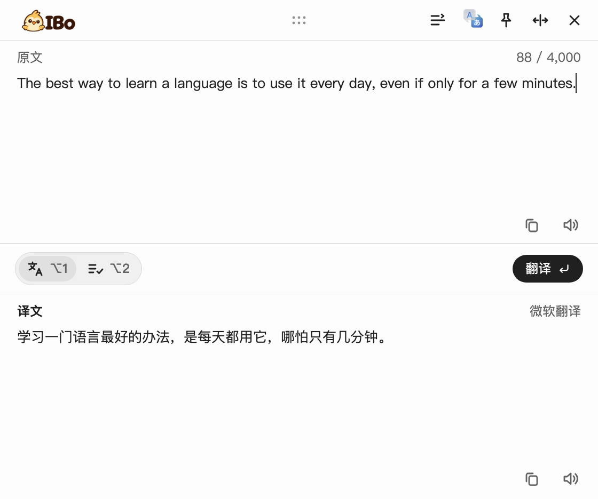
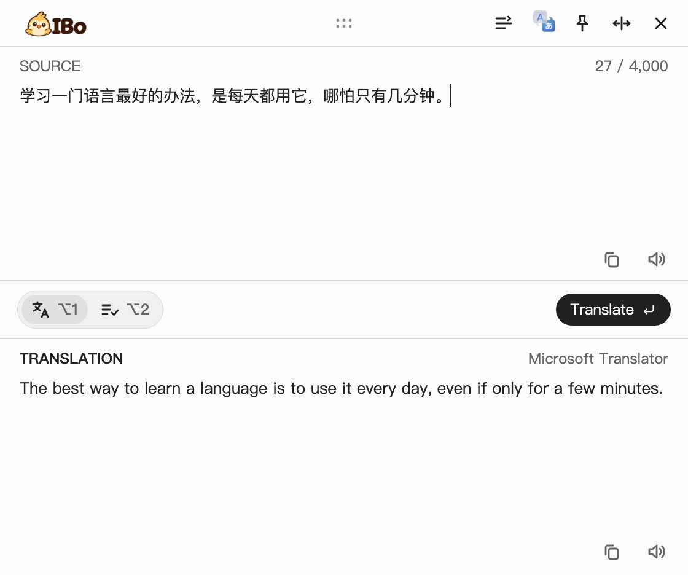
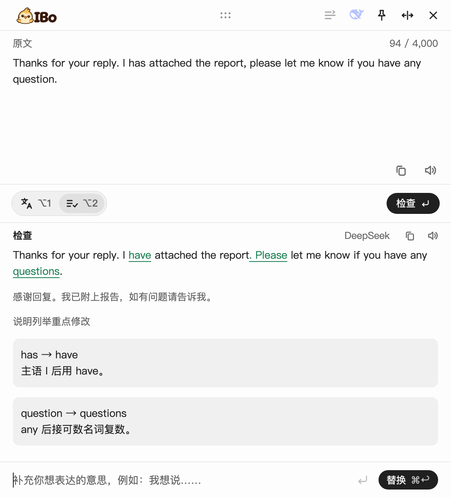
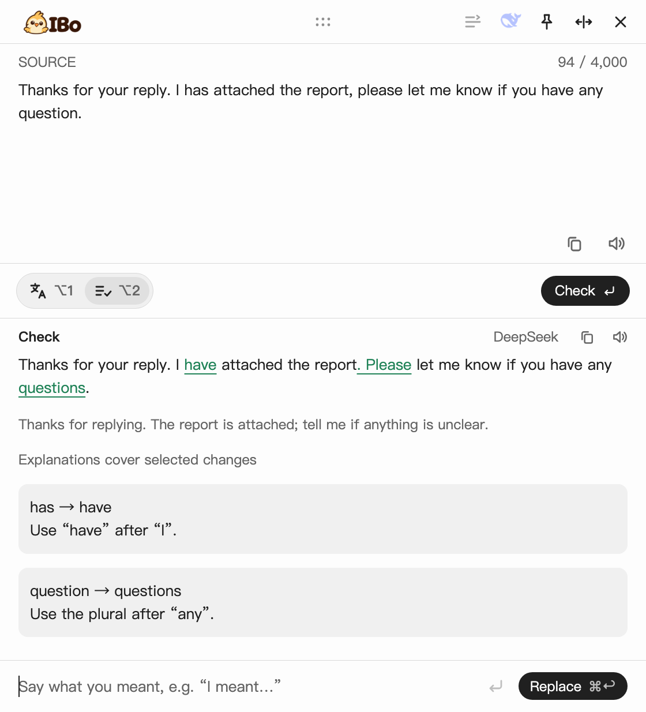
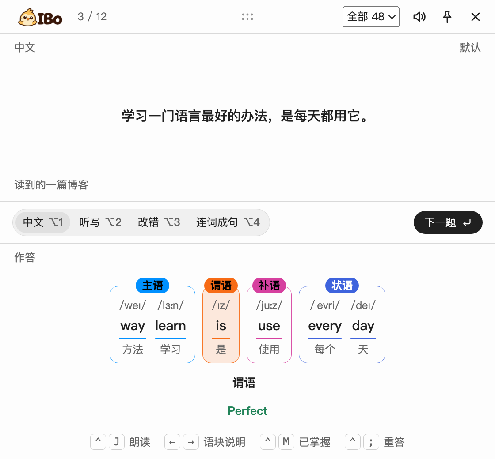
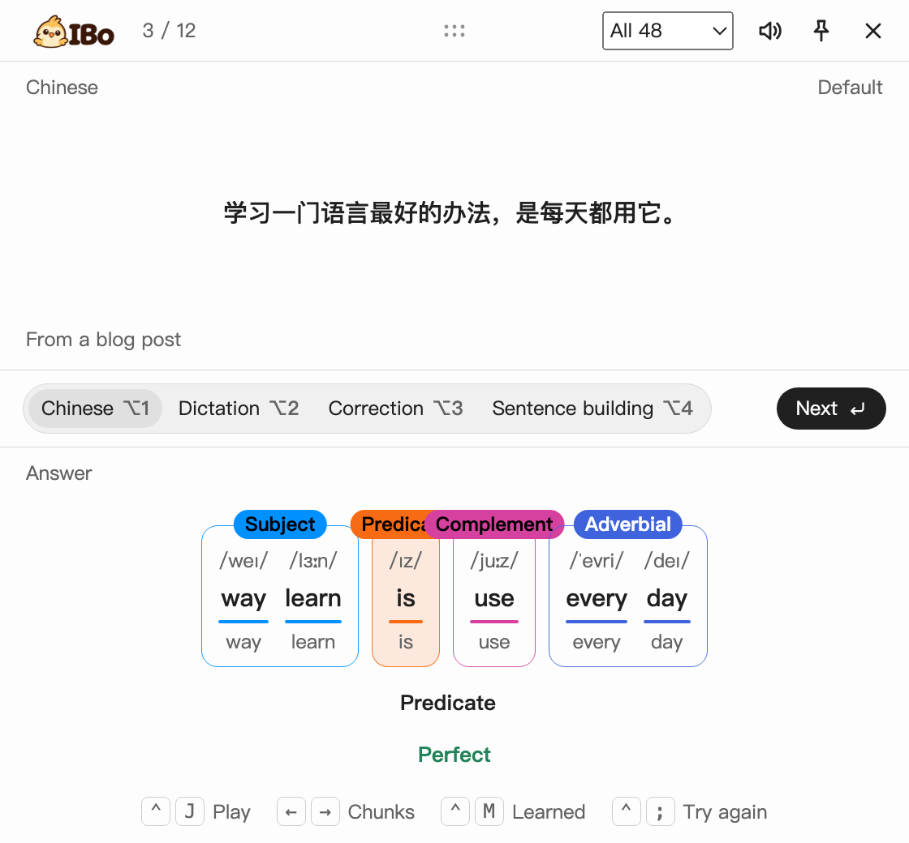
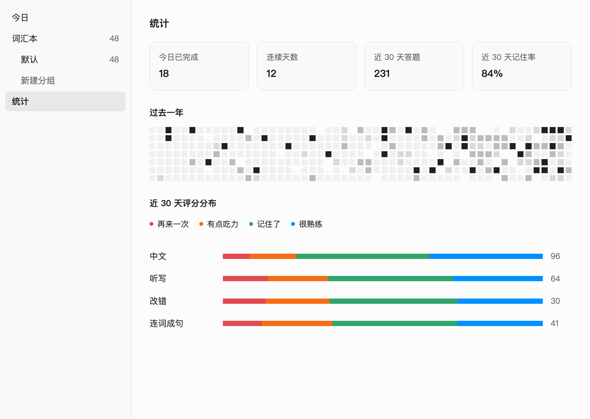
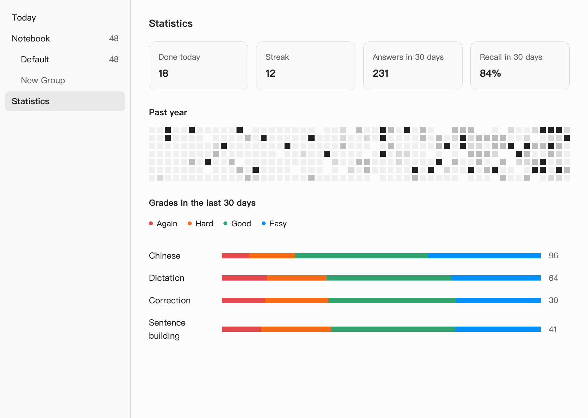

选中，按下，
就在手边翻译。Select, press,
and it’s translated.
Ibo 是 macOS 与 Windows 上的划词翻译工具。在任何应用里选中一段文字，按下快捷键，译文就出现在光标旁的弹窗里。写英文时用它检查，遇到好句子就收进词汇本，之后在同一个弹窗里复习。 Ibo is a translation tool for macOS and Windows. Select text in any app, press a shortcut, and the translation appears in a popup by your cursor. Check your English as you write, keep the sentences worth remembering, and review them later in the same popup.
免费下载Download for free版本 0.1.2，支持 macOS 12 及以上、Windows 10 和 11Version 0.1.2. For macOS 12 or later, Windows 10 and 11.


翻译Translate
在任何应用里，一个快捷键One shortcut, from any app
Ibo 常驻在菜单栏或任务栏。按下快捷键，它读取当前应用里选中的文字，或者刚复制的内容，弹窗出现在光标旁边，不必切换窗口。中文译成英文，其他语言译成中文。快捷键可以在设置里重新录制。 Ibo lives in the menu bar or the taskbar. Press a shortcut and it reads the text selected in the app you are in, or what you have just copied, and opens next to your cursor without switching windows. Chinese is translated into English, and other languages into Chinese. Every shortcut can be recorded again in Settings.
- ⌘1
- 翻译选中文本Translate selection
- ⌘2
- 检查选中文本Check selection
- ⌘3
- 翻译剪贴板Translate clipboard
- ⇧⌘G
- 打开翻译Open translation
- ⇧⌘L
- 切换学习模式Learn Mode
- Alt1
- 翻译选中文本Translate selection
- Alt2
- 检查选中文本Check selection
- Alt3
- 翻译剪贴板Translate clipboard
- AltShiftG
- 打开翻译Open translation
- AltShiftL
- 切换学习模式Learn Mode
不用密钥也能翻译Translate without a key
默认使用微软翻译，装好就能用，也可以换成 Google 翻译。想要 AI 翻译时，填入你自己的 DeepSeek 密钥，或任何兼容 OpenAI 接口的服务。打开拆句，长段落会逐句对照显示。原文和译文都可以朗读，美式与英式英语各有四种音色。 Microsoft Translator works as soon as Ibo is installed, and Google Translate is one click away. For AI translation, add your own DeepSeek key or any service with an OpenAI-compatible API. Turn on sentence split to read long paragraphs sentence by sentence. Both sides can be read aloud, in four American and four British voices.
- 微软翻译Microsoft Translator
- Google 翻译Google Translate
- DeepSeek
- OpenAI 兼容服务OpenAI-compatible services
检查Check
写英文时，先检查一遍Check your English before you send it
在邮件或聊天里选中刚写的英文，按 ⌘2Alt+2。改过的词用绿色下划线标出，下面是译回中文的意思和每处修改的说明。意思不对时，补一句你想表达的，Ibo 会按它重新改。 Select what you have just written in a mail or a chat and press ⌘2Alt+2. Changed words are underlined in green, followed by what the text says in Chinese and why each change was made. If the meaning is off, add a line about what you meant and Ibo checks again with it.
满意了就按 ⌘↩Ctrl+↩ 替换，改好的文字直接写回原来的应用。原文在这期间被改动过，Ibo 不会覆盖它。检查需要你自己的 AI 服务密钥。 When it reads right, press ⌘↩Ctrl+↩ to replace, and the corrected text goes straight back into the app it came from. If the original has changed in the meantime, Ibo leaves it alone. Checking uses your own AI service key.


学习Learn
收进词汇本，在弹窗里复习Keep a sentence, review it in the popup
遇到值得记住的句子，点结果旁的 ♡ 或按 ⌘DCtrl+D 收进词汇本，顺手记一句在哪里读到的。按 ⇧⌘LAlt+Shift+L，同一个弹窗变成复习卡片：看中文写英文、听写、改错、连词成句四种题型，逐词作答，答完显示句子结构和评级。 When a sentence is worth remembering, click ♡ beside the result or press ⌘DCtrl+D, and note where you read it. Press ⇧⌘LAlt+Shift+L and the same popup becomes a review card with four exercises: write it from the Chinese, dictation, correction and sentence building. Answer word by word, then see the sentence’s structure and your grade.


每天复习一点，看得见进度A little every day, and you can see it
学习窗口里，今日页列出待复习和新条目；词汇本可以搜索、筛选、分组和编辑，也能导出成 JSON 或 CSV；统计页显示过去一年每天的练习，以及近 30 天各题型的评分分布。 In the Learn window, Today shows what is due and what is new. The notebook can be searched, filtered, grouped and edited, and exported as JSON or CSV. Statistics show every day of practice over the past year, and the grades for each exercise over the last 30 days.


- 句子结构Sentence structure
- 词汇本里的句子按主语、谓语、宾语等成分着色，标出音标和释义。点一个词朗读，右键可以把单词或词组也收进词汇本。Sentences in the notebook are coloured by subject, predicate, object and the rest, with phonetics and meanings. Click a word to hear it, or right-click to keep a word or phrase too.
- 按记忆排期Spaced repetition
- 每种题型分别安排复习时间。每天复习多少、新学多少、一天从几点开始，都可以在设置里调整。Each exercise is scheduled on its own. Set how many reviews and new entries a day, and when your day begins.
- 复习提醒Review reminders
- 托盘图标上显示今天还剩几条待复习，不发系统通知。不需要时可以在设置里关掉。The tray icon shows how many reviews are left today, without system notifications. Turn it off in Settings if you prefer.
- 撤销Undo
- 收进或移出词汇本、删除条目和分组，都可以撤销。在输入框里接受的修改，也能一键退回原文。Adding to or removing from the notebook and deleting entries or groups can all be undone, and changes accepted into the input field can be taken back in one click.
- 数据在你的电脑上Your data, on your computer
- 没有账户和服务器，不收集使用数据。设置、词汇本和练习记录只保存在本机。No account, no server, no usage data. Settings, the notebook and your practice stay on this computer.
- 密钥只存本机Keys stay local
- AI 服务的密钥不进界面和日志。macOS 上存为只有你能读的文件，Windows 上用系统加密保存。AI service keys never reach the interface or the logs. On macOS they are kept in a file only you can read, and on Windows encrypted by the system.
- 两个平台一致The same on both
- Mac 和 Windows 上的界面、题型和词汇本格式相同，词汇本文件复制过去就能继续复习。The interface, the exercises and the notebook format are the same on Mac and Windows. Copy the notebook across and carry on.
- 中文与 EnglishChinese and English
- 界面可以在中文和英文之间切换，浅色、深色跟随系统或自选。Switch the app between Chinese and English, and follow the system’s light or dark appearance or pick one.
选中一段英文试试Select some English and try it
版本 0.1.2，2026 年 11 月 20 日Version 0.1.2, November 20, 2026
macOS
通用版，适用于 Apple 芯片和 Intel，需要 macOS 12 及以上。DMG，11 MB，已通过 Apple 公证。Universal, for Apple silicon and Intel, macOS 12 or later. DMG, 11 MB, notarized by Apple.
Windows x64
适用于 Intel 和 AMD 处理器，Windows 10 和 11。安装程序，5 MB。For Intel and AMD processors, Windows 10 and 11. Installer, 5 MB.
Windows ARM
适用于 ARM 处理器的 Windows 电脑。安装程序，5 MB。For Windows PCs with ARM processors. Installer, 5 MB.
macOSmacOS 把 Ibo 拖进“应用程序”后打开。读取选中文字和替换写回需要辅助功能权限，请在“系统设置 › 隐私与安全性 › 辅助功能”中允许 Ibo。从 0.1.1 升级的需要重新允许一次。 Drag Ibo into Applications and open it. Reading selections and replacing text need Accessibility access: allow Ibo in System Settings › Privacy & Security › Accessibility. If you are upgrading from 0.1.1, allow it once more.
WindowsWindows 安装程序暂未进行代码签名，运行时 Windows 可能提示“已保护你的电脑”，点“更多信息”，再点“仍要运行”。 The installer is not code-signed yet, so Windows may say it protected your PC. Click More info, then Run anyway.